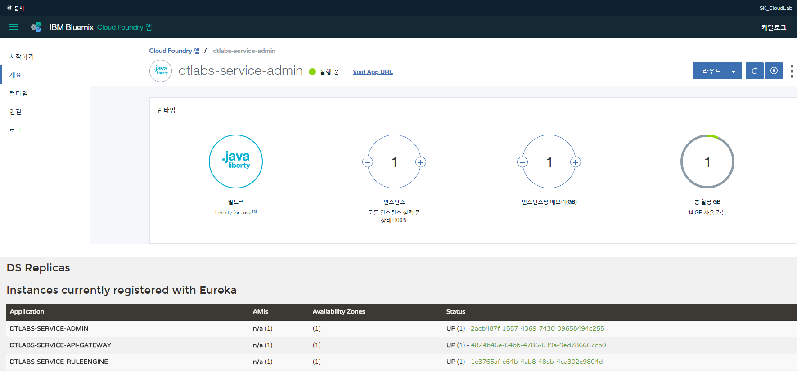
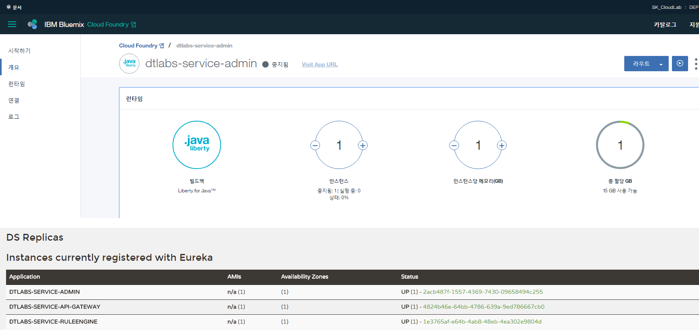
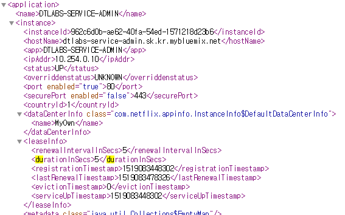
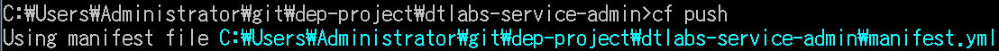

예전에 bluemix에 배포한 어플리케이션이 eureka와 연계했을 때 생각과 다르게 동작하는 것을 발견했습니다.
해당 현상은 eureka client 어플리케이션이 종료됐을 때, eureka server에서 해당 어플리케이션 정보가 삭제되는데 생각보다 delay가 생기는 것 입니다. (예상 : 5초 내외, but 수 분이상 dashboard 상에서 조회)


어디서 꼬인 것일까요 ?
eureka 설정이 잘못됐을 가능성
eureka server 적용된 설정은 아래와 같습니다.
eureka:
instance:
instance-id: ${vcap.application.instance_id:${spring.application.name}:${spring.application.instance_id:${server.port}}}
hostname: ${vcap.application.uris[0]}
prefer-ip-address: false
non-secure-port: 80
lease-renewal-interval-in-seconds: 5
lease-expiration-duration-in-seconds: 5
client:
region: default
fetch-registry: false
register-with-eureka: false
service-url:
defaultZone: http://${eureka.instance.hostname}:${server.port}/eureka/eureka.instance.lease-expiration-duration-in-seconds 을 5초로 세팅했습니다.
eureka server에서 eureka client의 health check를 수행하고, 5초를 넘어서면 eureka server에서 해당 eureka client가 unregist 되는 것으로 이해하고 적용했습니다.
해당 설정은 의도에 맞게 적용된 것일까요 ?
Cloud Foundry 기반의 플랫폼에서 어플리케이션의 종료는 어떻게 이루어질까요 ?
해당 프로세스에 적합하게 어플리케이션이 종료된 것일까요 ?
eureka:
instance:
instance-id: ${vcap.application.instance_id:${spring.application.name}:${spring.application.instance_id:${server.port}}}
hostname: ${vcap.application.uris[0]}
prefer-ip-address: false
non-secure-port: 80
lease-renewal-interval-in-seconds: 5
lease-expiration-duration-in-seconds: 5
client:
region: default
fetch-registry: false
register-with-eureka: false
service-url:
defaultZone: http://${eureka.instance.hostname}:${server.port}/eureka/ eureka:
instance:
instance-id: ${vcap.application.instance_id:${spring.application.name}:${spring.application.instance_id:${server.port}}}
hostname: ${vcap.application.uris[0]}
prefer-ip-address: false
non-secure-port: 80
lease-renewal-interval-in-seconds: 5
client:
region: default
fetch-registry: true
register-with-eureka: true
registry-fetch-interval-seconds: 5
service-url:
defaultZone: ${vcap.services.dtlabs-service-discovery.credentials.uri}/eureka/ @Data
@ConfigurationProperties("eureka.instance")
public class EurekaInstanceConfigBean implements CloudEurekaInstanceConfig, EnvironmentAware {
/**
* Indicates the time in seconds that the eureka server waits since it received the
* last heartbeat before it can remove this instance from its view and there by
* disallowing traffic to this instance.
*
* Setting this value too long could mean that the traffic could be routed to the
* instance even though the instance is not alive. Setting this value too small could
* mean, the instance may be taken out of traffic because of temporary network
* glitches.This value to be set to atleast higher than the value specified in
* leaseRenewalIntervalInSeconds.
*/
private int leaseExpirationDurationInSeconds = 90;
...
}eureka server / eureka client / eureka.instance.lease-expiration-duration-in-seconds 설정을 다 확인해보니, 무언가 이상한게 보입니다.
eureka.instance.lease-expiration-duration-in-seconds 설정을 eureka server에 세팅하고 eureka client에는 세팅을 하지 않았습니다.
eureka 설정의 개념을 살펴보니,
eureka.instance: eureka service가 자신이 eureka 서버에 등록될 때 사용하는 설정
eureka.client: 다른 eureka service를 찾으려고 할 때 사용하는 설정
eureka.instance.lease-expiration-duration-in-seconds 는 eureka client 쪽에 설정을 해줘야 의도대로 동작한다.

하지만 eureka client 설정변경과 관계없이, default 값이 90초로 세팅되어 있는데 eureka server dashboard 에서 어플리케이션 정보가 삭제될 때까지 수 분이 걸리는 것으로 봐서 해당 사유는 아닌 듯합니다.
java buildpack
2017-10-11T10:50:49.32+0900 [API/1] OUT Updated app with guid 1d6ccdc9-730d-459d-a9fe-c097abee52cb ({"state"=>"STOPPED"})
2017-10-11T10:50:49.33+0900 [CELL/0] OUT Exit status 0
2017-10-11T10:50:49.33+0900 [APP/0] OUT [CONTAINER] org.apache.coyote.http11.Http11NioProtocol INFO Pausing ProtocolHandler ["http-nio-8080"]
2017-10-11T10:50:49.33+0900 [APP/0] OUT [CONTAINER] org.apache.catalina.core.StandardService INFO Stopping service Catalina
2017-10-11T10:50:49.33+0900 [APP/0] OUT 2017-10-11 10:50:49.332 INFO 8 --- [ Thread-7] ationConfigEmbeddedWebApplicationContext : Closing org.springframework.boot.context.embedded.AnnotationConfigEmbeddedWebApplicationContext@5071d11a: startup date [Wed Oct 11 10:49:51 KST 2017]; parent: org.springframework.context.annotation.AnnotationConfigApplicationContext@74b09b
2017-10-11T10:50:49.33+0900 [APP/0] OUT 2017-10-11 10:50:49.337 INFO 8 --- [ Thread-7] o.s.c.n.e.s.EurekaServiceRegistry : Unregistering application dtlabs-service-activity with eureka with status DOWN
2017-10-11T10:50:49.33+0900 [APP/0] OUT 2017-10-11 10:50:49.337 WARN 8 --- [ Thread-7] com.netflix.discovery.DiscoveryClient : Saw local status change event StatusChangeEvent [timestamp=1507686649337, current=DOWN, previous=UP]
2017-10-11T10:50:49.33+0900 [APP/0] OUT 2017-10-11 10:50:49.338 INFO 8 --- [ Thread-7] com.netflix.discovery.DiscoveryClient : Shutting down DiscoveryClient ...
2017-10-11T10:50:49.33+0900 [APP/0] OUT 2017-10-11 10:50:49.338 INFO 8 --- [nfoReplicator-0] com.netflix.discovery.DiscoveryClient : DiscoveryClient_DTLABS-SERVICE-ACTIVITY/836a081a-b768-4b66-64cc-90ce75991597: registering service...
2017-10-11T10:50:49.33+0900 [APP/0] OUT 2017-10-11 10:50:49.338 INFO 8 --- [ Thread-7] com.netflix.discovery.DiscoveryClient : Unregistering ...
2017-10-11T10:50:49.46+0900 [APP/0] OUT 2017-10-11 10:50:49.457 INFO 8 --- [nfoReplicator-0] com.netflix.discovery.DiscoveryClient : DiscoveryClient_DTLABS-SERVICE-ACTIVITY/836a081a-b768-4b66-64cc-90ce75991597 - registration status: 204
2017-10-11T10:50:49.49+0900 [APP/0] OUT 2017-10-11 10:50:49.487 INFO 8 --- [ Thread-7] com.netflix.discovery.DiscoveryClient : DiscoveryClient_DTLABS-SERVICE-ACTIVITY/836a081a-b768-4b66-64cc-90ce75991597 - deregister status: 200
2017-10-11T10:50:49.94+0900 [APP/0] OUT 2017-10-11 10:50:49.942 INFO 8 --- [ Thread-7] com.netflix.discovery.DiscoveryClient : Completed shut down of DiscoveryClient
2017-10-11T10:50:49.98+0900 [APP/0] OUT 2017-10-11 10:50:49.981 INFO 8 --- [ Thread-7] o.s.c.support.DefaultLifecycleProcessor : Stopping beans in phase 2147483647
2017-10-11T10:50:49.98+0900 [APP/0] OUT 2017-10-11 10:50:49.982 INFO 8 --- [ Thread-7] o.s.c.support.DefaultLifecycleProcessor : Stopping beans in phase 0
2017-10-11T10:50:50.09+0900 [APP/0] OUT 2017-10-11 10:50:50.094 INFO 8 --- [ost-startStop-2] o.a.c.c.C.[Catalina].[localhost].[/] : Closing Spring root WebApplicationContext
2017-10-11T10:50:50.09+0900 [APP/0] OUT 2017-10-11 10:50:50.096 INFO 8 --- [ Thread-7] o.s.j.e.a.AnnotationMBeanExporter : Unregistering JMX-exposed beans on shutdown
2017-10-11T10:50:50.10+0900 [APP/0] OUT 2017-10-11 10:50:50.101 INFO 8 --- [ Thread-7] o.s.j.e.a.AnnotationMBeanExporter : Unregistering JMX-exposed beans
2017-10-11T10:50:50.23+0900 [APP/0] OUT 2017-10-11 10:50:50.238 WARN 8 --- [ Thread-7] c.n.c.sources.URLConfigurationSource : No URLs will be polled as dynamic configuration sources.
2017-10-11T10:50:50.24+0900 [APP/0] OUT 2017-10-11 10:50:50.241 INFO 8 --- [ Thread-7] c.n.c.sources.URLConfigurationSource : To enable URLs as dynamic configuration sources, define System property archaius.configurationSource.additionalUrls or make config.properties available on classpath.
2017-10-11T10:50:50.33+0900 [APP/0] OUT 2017-10-11 10:50:50.333 INFO 8 --- [ Thread-7] j.LocalContainerEntityManagerFactoryBean : Closing JPA EntityManagerFactory for persistence unit 'default'
2017-10-11T10:50:50.40+0900 [APP/0] OUT [CONTAINER] org.apache.catalina.loader.WebappClassLoaderBase WARNING The web application [ROOT] registered the JDBC driver [org.mariadb.jdbc.Driver] but failed to unregister it when the web application was stopped. To prevent a memory leak, the JDBC Driver has been forcibly unregistered.
2017-10-11T10:50:50.50+0900 [APP/0] OUT [CONTAINER] org.apache.coyote.http11.Http11NioProtocol INFO Stopping ProtocolHandler ["http-nio-8080"]
2017-10-11T10:50:50.56+0900 [APP/0] OUT [CONTAINER] org.apache.coyote.http11.Http11NioProtocol INFO Destroying ProtocolHandler ["http-nio-8080"]
2017-10-11T10:50:50.64+0900 [APP/0] OUT Exit status 143
2017-10-11T10:50:50.65+0900 [CELL/0] OUT Destroying container
2017-10-11T10:50:51.27+0900 [CELL/0] OUT Successfully destroyed containerbash
2017-10-11T10:55:52.45+0900 [API/0] OUT Updated app with guid 1d6ccdc9-730d-459d-a9fe-c097abee52cb ({"state"=>"STOPPED"})
2017-10-11T10:55:52.45+0900 [CELL/0] OUT Exit status 0
2017-10-11T10:56:03.46+0900 [CELL/0] OUT Destroying container
2017-10-11T10:56:04.07+0900 [CELL/0] OUT Successfully destroyed container
buildpack 별 log를 확인해보니, 다른 점을 찾을 수 있습니다.
java buildpack 은 종료시 DispatcherServlet.destory() -> AbstractApplicationContext.close() 가 호출되는데, liberty-for-java buildpack은 여타 동작없이 어플리케이션을 강제종료 시킨 것 처럼 보인다.
liberty-for-java buildpack 의 강제종료 사유는 무엇일까요?
10초 내로 SIGTERM 으로 종료되지 않으면 SIGKILL로 어플리케이션을 종료시킨다.
이것 때문에 강제종료 처리가 되는 것일까요 ?
SIGTERM 이후 10초 내에 어플리케이션이 종료되지 않은 이유는 무엇일까요 ?
Cloud Foundry의 custom command를 적용하기 위해서는 exec 를 prefix로 적용해줘야한다.
liberty-for-java buildpack은 exec prefix를 적용해 어플리케이션을 구동하고 있을까요 ?
java buildpack
liberty-for-java buildpack
예전에 적용된 빌드팩에 exec prefix가 적용되지 않은 것이 문제라면, 빌드팩을 최신 버전(v.3.1.5)으로 변경해서 재배포를 해보겠습니다.

API/1 Updated app with guid dde4c846-0e96-45f5-b492-704d7a5b0043 ({"state"=>"STOPPED"}) 2018년 2월 19일 06:46:24.264 오후
APP/0 .app-management/scripts/start: 1: kill: invalid signal number or name: igterm 2018년 2월 19일 06:46:24.266 오후
CELL/0 Exit status 0 2018년 2월 19일 06:46:24.268 오후
CELL/0 Successfully destroyed container 2018년 2월 19일 06:46:35.999 오후여전히 의도대로 동작하지 않아서 로그를 확인해보니 kill: invalid signal number or name: igterm 이라는 로그가 찍혀 있습니다.
sigterm의 오타일까요 설마… 원인을 잘 모르겠네요.
GG
eureka.instance.lease-expiration-duration-in-seconds 설정은 eureka client에 세팅을 해줘야 합니다. 이 말은 어플리케이션 마다 eureka server에서 unregist 되는 시간을 달리 해줄 수 있다는 의미입니다. 활용할 방법을 고민해볼 만합니다.
Cloud Foundry의 custom command 사용시 exec prefix를 달아줘야 합니다. Cloud Foundry 기반의 플랫폼을 구축할 때 or buildpack을 개발해서 제공할 때 유의해야 할 부분입니다.
liberty-for-java buildpack 은 2017년 10월 exec prefix가 적용된 buildpack을 release 했으나, 원인 모를 곳에서 막히고 말았습니다.
제가 잘못한 것 인지, buildpack이 잘못한 것인지 시간이 지나고 확인을 해보겠습니다.